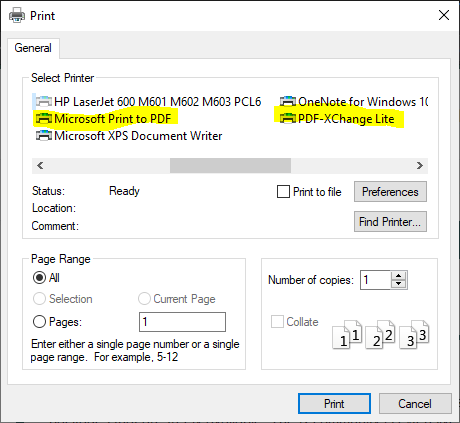

Setup and RStudio Projects
The purpose of this class is to introduce students to the principles of programming using R and RStudio. R and RStudio are powerful and versatile data analysis packages that are freely available. The R community is extensive and is constantly developing new tools that rival and, in many cases, surpass commercial statistical software and graphing packages. This class is designed for students new to programming. While the class focus is on R programming in RStudio, the programming skills taught (e.g., for loops, if-else statements, functions) are designed so that students can transfer their skills to other programming languages like C, JavaScript, or Python.
There are two versions of this class. The assignments for both versions are the Applications in the lessons.
Version 1: For-credit
This version is a three credit class with regular weekly assignments.
Version 2: Non-credit
This version is self-paced and has no regularly scheduled class times but students are expected to complete the class within six months.
Charlie Belinsky
About me...
I started my career as a Software Engineer for Motorola in Arizona where I developed software for military radios. From there I became a high school teacher in Port Huron, MI where I taught Computer Science, Web Design, and Physical Science. After that, I worked as an Instructional Designer for the College of Education at MSU where my main project was developing the hybrid graduate program. I currently work at the QFC where my primary job is developing online classes, including this one. In my free time, you will often find me with a backpack deep in a forest or, as my picture testifies to, hanging out on a mountain in the Northern Cascades.
You can contact me, Charlie, regarding technical issues.
MSU also offers 24 hour technical support for students, this includes guest students. This support includes hardware, software, and D2L.
Students should be familiar with basic statistical concepts (e.g., mean, standard deviation, standard error). All material for this course is online -- no textbooks or any other purchases are required.
Hardware: Any Windows (10 or 11), Mac, or Linux machine from the past ten years that has updates installed can handle all the hardware and software requirements of this class. Preferably the computer has a webcam and microphone for videoconferencing.
Browser: You can use any browser (Firefox, Microsoft's Edge, Chrome, Safari) updated within the last couple of years. You will have issues using Microsoft's Internet Explorer, which was last updated in 2015.
Videoconferencing: We use Zoom for our videoconference meetings. The meeting link will be emailed to you prior to the meeting. It is recommended that you download and test your camera and microphone on Zoom before attending an instructor meeting. The easiest way to do this is to go to the Zoom test page. Note: Zoom's test page will download Zoom for you.
To test your hardware in Zoom, open Zoom and make sure you are on the Home tab and click the Settings Icon (right side- fig ##) and the Settings Window will open (right side- fig ##). Go to the Audio and Video tabs to test your microphone, speakers, and webcam. If you are using a Mac, the view is different but the buttons are the same.
Testing the audio and video in Zoom (click on picture to resize).
You need an MSU ID or an MSU Guest Account to access the class. You can get an MSU Guest Account here. The Guest Account is the same as the email you used to get it.
The course has 28 lessons divided into two units: Basic Programming and Data Programming
All lessons have an Application section at the end that will ask you to apply what you learned in the lesson in your own script. The Application is the only product that gets evaluated. There are no tests and there is no final exam.
Version 1 (for-credit):
You will have multiple chances to finish the Applications as long as you hand them in on time. I would rather you hand in an incomplete Application then a late Application.
Version 2 (non-credit):
The class is self-paced, however you should not go more than 2 weeks without handing in an application unless you inform the instructor that there will be a delay. You will have a chance to redo all applications.
Each application has these three questions regarding the lesson:
These questions are vital for feedback in this class and far more useful to me than end-of-class surveys as they give me real-time information. Please take a few minutes to answer these questions. Feedback from these questions has become my main way of improving the class. In return, I promise to address concerns and questions from your responses.
Many of the lessons contain optional content called Extension and Traps. Extensions contain material that goes beyond the lesson's objectives, and Traps capture some of the common issues students have with the lesson's objectives. There are links to Extensions and Traps within the Content area of the lesson. Clicking on the appropriate link takes you directly to the Extension or Trap. Extension: testing the extension link.
Each lesson will include a link to the script and data file used in the lesson.
All material used in the class is also available on GitHub, this includes:
Version 1 (FW 491):
Class will be every other Friday from 9-11 in 102 UPLA. Students can request a Zoom meeting at any time.
Version 2 (non-credit):
Student-instructor meetings will be done on an as-needed basis and meetings can always be requested by the student. Meetings are done preferably using Zoom so that screens can be shared.
This section goes over some of the technological features built into the lessons
If you long-click (hold left-button for about half a second) anywhere on any lesson page (fig ##, try it!), you are given options to:
The long-click menu -- this view is from Firefox
Most pictures in the course can be resized so that the picture is out of your way when you don't need to view it. Clicking on the picture toggles it between the minimized and maximized states (fig ##).
.jpg)
Test picture to toggle (Ninh Bình, Việt Nam)
When you click on a figure reference (e.g., fig ##), the caption on the figure will highlight for 2 seconds.
If the figure is not on the screen, then the page will scroll to the figure and highlight it. For instance, clicking on fig ## will take you to the Zoom figure near the top of this page. You can return to this position by long-clicking and selecting Return to the Previous Position
You can print any lesson or save it as a PDF by clicking on the Printer icon at the top of every lesson (and this syllabus). This will bring up a print dialog (fig ##) and you can print the lesson to a printer. On most machines, you can also choose a PDF device as a printer -- this will save the lesson as a PDF document.
Note: Using your browser's print feature instead of the Print link, will print out the whole webpage instead of just the lesson.

This author has two print-to-PDF devices -- the Microsoft Print to PDF, which comes with Windows 10, works fine
If you are still using Windows 7 or 8, you might not have a PDF device and you will need to download Print-to-PDF software. You can see if you have a PDF device by going to the print options in any program and see if any of the devices have "PDF" in their name (fig ##). If you don't have a PDF device, then I recommend you install CutePDF (direct link to the file download). CutePDF is simple print-to-PDF software that does not try to install any extra software on your computer. Trap: Bloatware
Double-clicking on a codeblock will select all the text in the codeblock and copy it to the clipboard -- you can then paste it into RStudio (or any other text editor).
# the next two lines should be at the top of all your scripts
rm(list=ls());
options(show.error.locations = TRUE);
# create three variables: d, t, and v
# give d and t values and use them to calculate v
d = 100;
t = 20;
v = d/t;
Double clicking on the codeblock selects all the text and copies it to the clipboard
The biggest thing that is lost when you move a class from a face-to-face environment to an online environment is the daily interaction between the instructor and the students. These interactions provide invaluable informal feedback for the instructor and, I would argue, are the main tool that an instructor uses to make improvements to their class. It is impossible to replicate this in an online class but I ask that you help me out and make an effort to communicate to me the little things. This could mean technical nags like content not appearing properly or pages loading too slowly, lesson content that is unclear, grammar and spelling issues, or scripts that do not work or work in a way that you do not understand.
Thank you for reading and taking this into consideration. In the end, it is the interactions between an instructor and the students that make a class great.
Now on to the stuff I have to put in a syllabus...
Written or other work which a student submits in a course shall be the product of his/her own efforts. Plagiarism, cheating, and all other forms of academic dishonesty are prohibited. Students are expected to adhere to the ethical and professional standards associated with their programs and academic courses. All applicable portions of Michigan State’s Policy on Academic Integrity apply to non-credit courses. Copies of the Policy on Academic Integrity may be accessed here.
You are expected to log in to the class at least once a week. Logging in allows you to stay updated and see new announcements.
Please note that not all course lessons are the same length and the later ones tend to involve more work. Our goals with regard to participation/progress are to (a) keep you engaged in the course, (b) enhance the overall learning environment by promoting student-teacher communication, and (c) avoid a last minute time crunch for everyone involved. We will not be sympathetic or make allowances for your failure on course tasks or deadlines that result from not seeing announcements because you had not accessed the course for an extended period, and had not told us you would be away from the internet.
Adobe Acrobat, like most free software you download, attempts to bundle itself with software you most likely do not need nor want (i.e., bloatware). Make sure you take some time to read the optional offers whenever you download software. This author would argue that the main reason computers "slow" down over time is because of extra software that users unwittingly install.

Three offers from Adobe that you neither need nor want -- this author recommends you uncheck them all.
Hi, and welcome to the test Extension. If you clicked on the Extension link to get here then you can return to your previous location by long-clicking on this page and choosing Go to Previous Location.
If you just scrolled down to this point then, congratulations, you have reached the end of the document.